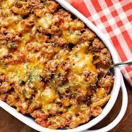

Keto Cheeseburger Casserole

Description
Easy to make cheeseburger casserole, full of flavor, and a great low-carb alternative to a cheeseburger.
Ingredients
- Olive oil spray for baking dish
- 2 tablespoons olive oil
- 2 lb. ground beef
- 1 medium onion diced
- 2 teaspoons kosher salt
- 1/4 teaspoon black pepper
- 1 tablespoon minced fresh garlic
- 1/4 cup mayonnaise
- 1/4 cup ketchup
- 1 tablespoon mustard
- 1 1/2 cup shredded sharp cheddar divided
Steps
- Preheat oven to 400 degress. Spray 9x13 baking dish with olive oil.
- Heat olive oil in a skillet over medium heat for about 2 minutes. Add onions and garlic, cook until aromatic and golden brown.
Add the beef. Cook until the meat is browned, about 5 minutes.
- Drain the excess liquid from pan.
- Stir in kosher salt, black pepper. Cook, stir for 1 minute.
- Turn off the heat. Stir in mayonnaise, ketchup, and mustard, and 1 cup cheddar cheese.
- Transfer mixture to the prepared 9x13 baking dish. Sprinkle remaining cheese on top.
- Bake until the cheese is melted and the casserole is heated through, about 15 - 20 minutes.